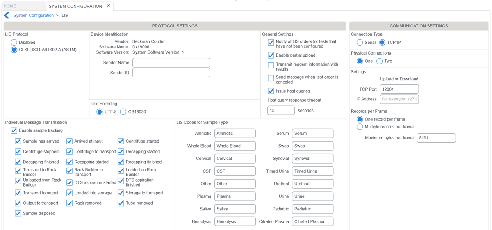
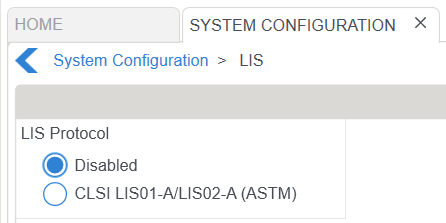
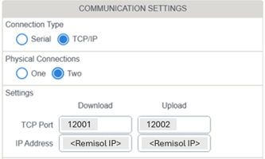
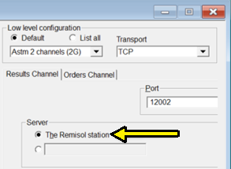

This topic includes information about how to configure the laboratory information system (LIS) protocol on the DxI 9000 instrument.
In the Console App go to
MENU > System Configuration to open the System Configuration window.
On the System Configuration page go to
External Interface Configuration > LIS.
Figure 98:

Note: If the LIS Protocol is Disabled, select
CLSI LIS01-A/LIS02-A (ASTM) to view configuration settings.
Figure 99:

In the Communication Settings pane
Select
TCP/IP for the connection type.
Select the number of
Physical Connections configured on the middleware or LIS.
Note: If the configuration uses one port, all the data for orders and results will use that one port. If the configuration uses two ports, the data for orders and results will use separate ports. See the DxI 9000 Host Manual C87417 for more information.
Type the relevant values for the middleware/LIS into the
TCP Port and
IP Address boxes.
Figure 100:

Important: Because the communication is outbound, the LIS or Remisol PC must be selected as the Server.
Figure 101:

Note: If multiple DxI instruments are being configured, be sure not to configure the instruments to use the same ports.